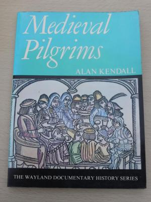

Books to Read
2016/02/18
The Karamazov BrothersAbout 1/3 of the way through. Not as bad as I thought it might be. I like this Oxford World's Classic translation. I tried the P&V, and it wasn't as good as I thought it might be. Monks punctuating their theological arguments with "So be it!" instead of "Amen"? "Dmitry Karamazov doesn't exist yet"? No thanks.The pages are way too thin, unfortunately - so the pages have to be kept close together until you're absolutely ready to turn. |

|
Dialogue Concerning HeresiesNot too long, might be dry. |
 |
The Shape of the LiturgyVery long, definitely dry. Also some of his assertions are supposed to be a bit out of date. |
|
Medieval PilgrimsVery short. Scholarly... |
 |
TS Eliot: Complete Poems and Plays: 1909-1950I'd like to start going through this at some point. |